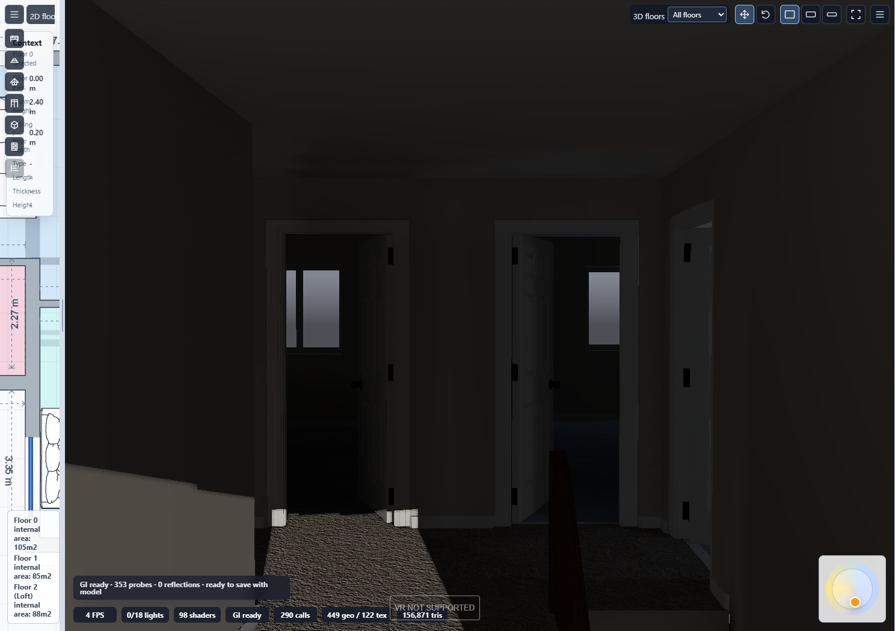
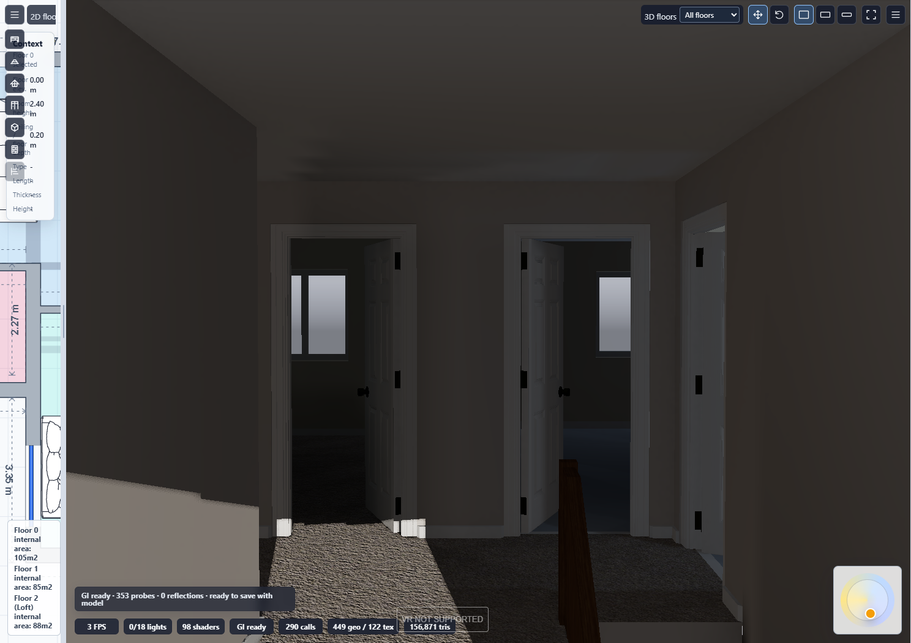
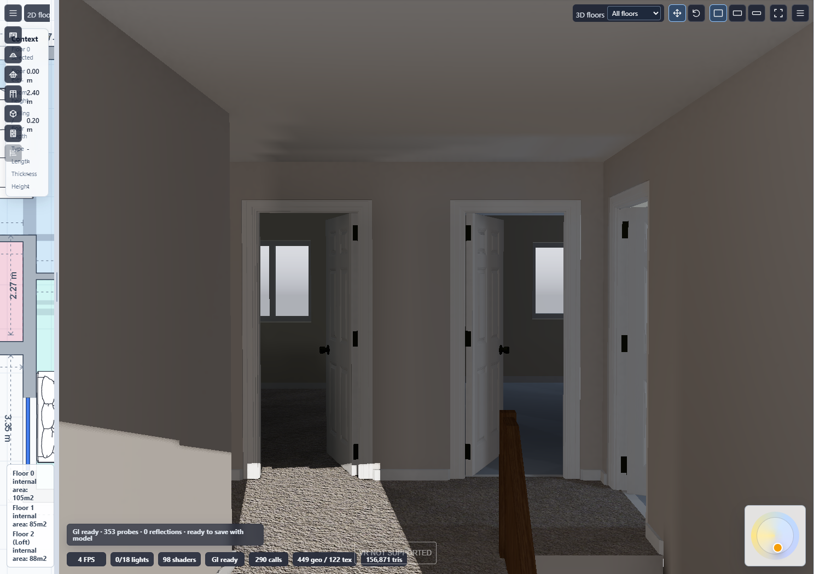
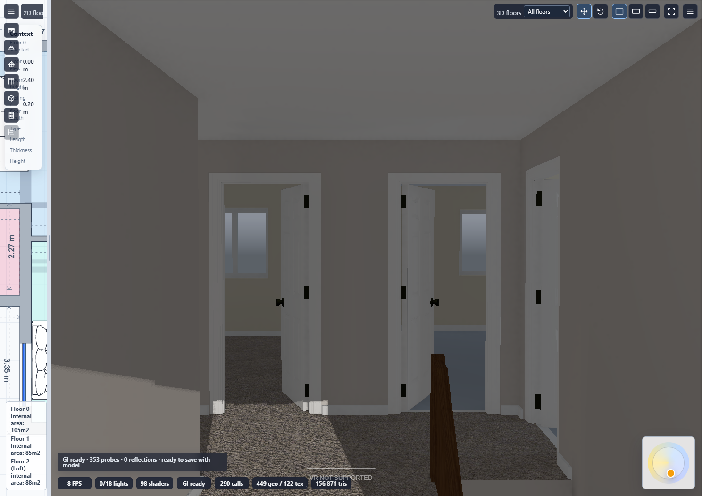
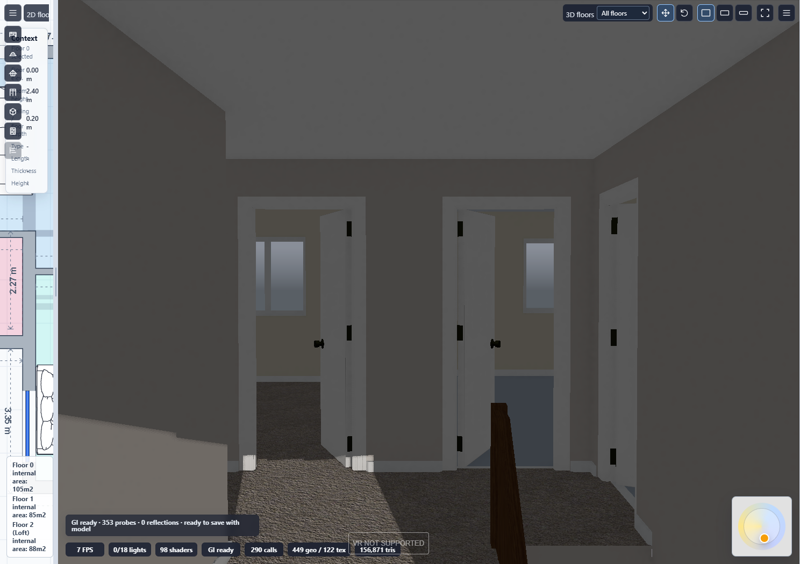
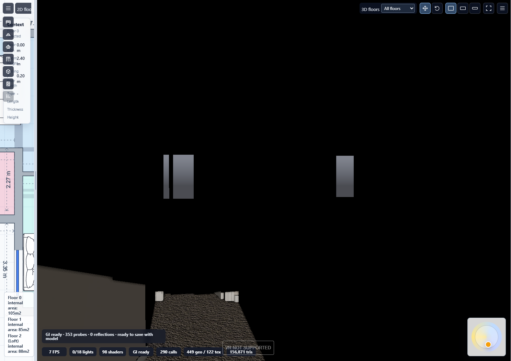
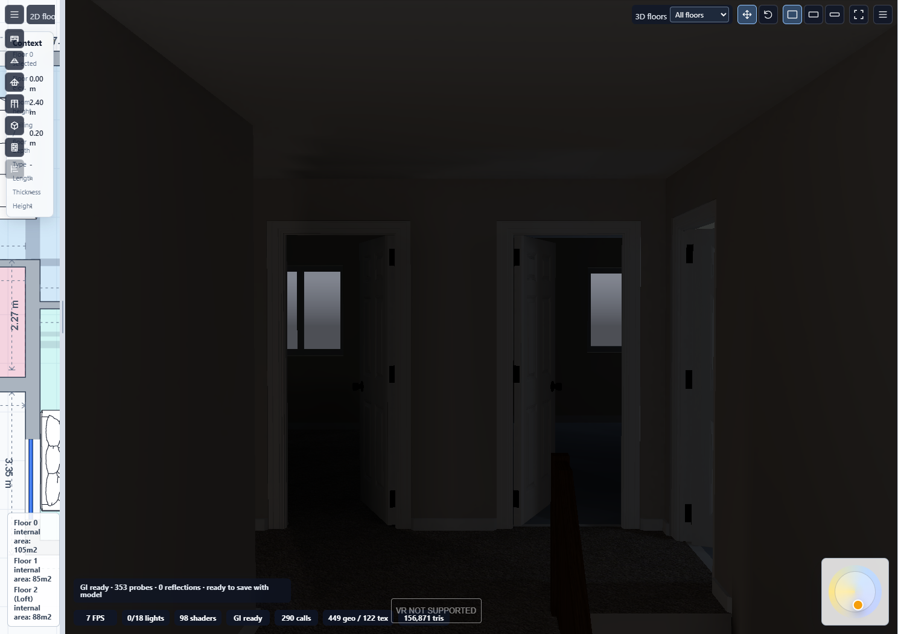
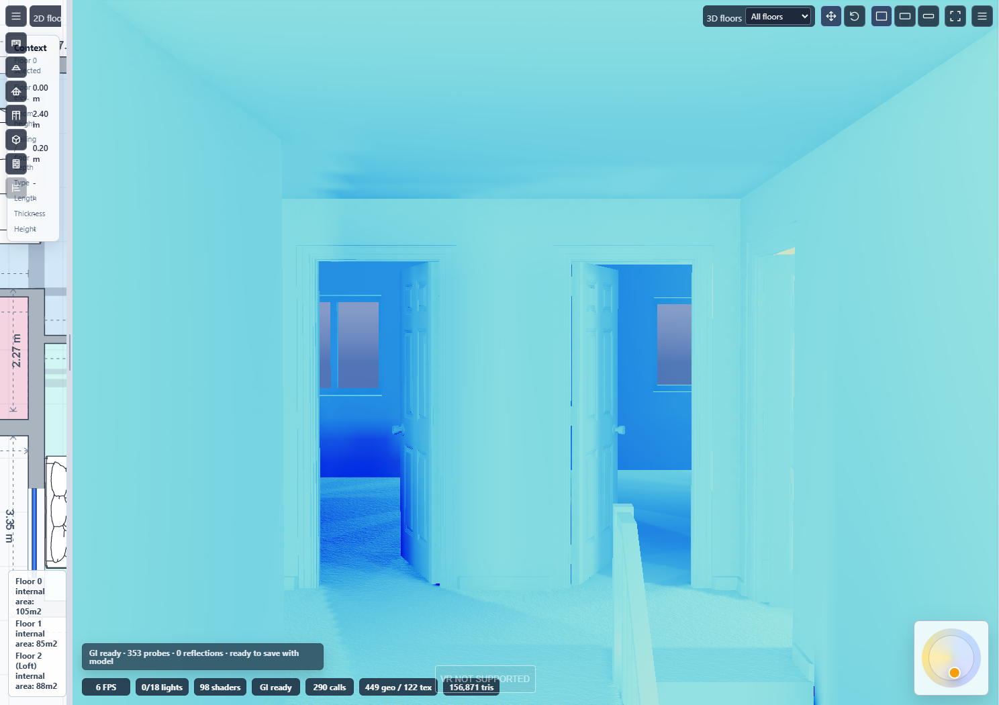

16 November 2026 · springfield_14.json · existing probe GI and point inspector
Implemented: full probe-only and indirect-irradiance false-colour views in the existing diagnostic panel, correct diagnostic mode IDs, a visible panel at this camera, and canonical shader keys for the current GI material suffix. Default transport, source intensities, ambient settings, probe count and capture resolution remain unchanged. A tested local interpolation alternative is retained only behind giSpatial=distance-local; the actual house did not justify promoting it.
Start with indoor fill at zero, then choose camera exposure. Zero fill removes the constant contribution hiding the GI gradient. At the current exposure this necessarily darkens the room. Exposure brightens actual indirect and direct light together, preserving their ratio and allowing stronger contrast between the sunny carpet, ceiling and shaded rooms. The +1 and +2 EV comparisons below are viewing choices, not changes to transport or source power.
Increase spatial resolution only where the reference identifies an error. The ceiling already has seven visible probes and its total energy is close to reference. A global increase is not supported by that measurement. A useful next experiment would add local samples near the bright carpet, ceiling junction and stair opening, then remeasure the corner and lower wall. Capture resolution is a separate variable: more probes cannot recover directional information that their captures fail to resolve. Going from 16² to 32² means four times as many texels per face, so it needs its own measured comparison before changing defaults.



These are isolated test previews. The saved project retains its authored settings. Recorded exposure and unchanged GI counters.
The supplied screenshot identifies the landing but contains no exact camera or sun values. The repeatable reconstruction uses camera position [10.3,4.15,11.15], looking at [10.3,4.05,5.9], the project’s saved sunlight/materials, exposure 0 stops, fill 0.32, 16×16 cubemap faces, six diffuse passes and L2 SH. Canvas layout is fixed at 1488×1050 with a 100 px plan pane. It is an approximate reconstruction, not a claim to reproduce the screenshot pixel for pixel.
The saved project enables lamps. Both that state and a separate lamps-off daylight state were measured; the latter resembles the screenshot more closely. The original project file was not rewritten. Six opaque receivers are picked at normalized canvas positions (0.50,0.12), (0.70,0.25), (0.91,0.38), (0.12,0.80), (0.38,0.95), (0.52,0.95). JSON records their world positions, normals, biases and visible probes.
All E values below are linear scene-relative diffuse irradiance, not lux. First means sky plus directly lit/emissive surfaces captured in the first pass; final includes the six-pass result. Material values are linear output from the real shader, before composer tone mapping and screen-space effects. Geometry-normal E and material pixels can differ because the latter include albedo, normal maps and material AO.
IndirectLighting.tsx captures linear half-float cubemaps. Geometry, shading normals, diffuse response and baseline radiance are cached. Dynamic sunlight is excluded from the immutable baseline, then indirectSurfaceRelighting.ts evaluates it using the current sun and shadow map. Diffuse response contains linear albedo × (1 − metalness) / π, with authored material effects. There is no tone mapping in transport.v48-exterior-tint suffix, allowing duplicate GI descriptors on cloned materials. That is now recognized and regression-tested.| Receiver | First E | Final E | Reference E | Probe material Y | Combined material Y |
|---|---|---|---|---|---|
| ceiling above sunlit carpet | 0.03381 | 0.08629 | 0.08334 | 0.02715 | 0.12893 |
| upper-right ceiling corner | 0.02220 | 0.07939 | 0.05833 | 0.02545 | 0.12727 |
| upper-right wall | 0.03894 | 0.09993 | 0.09381 | 0.02321 | 0.09741 |
| lower wall near carpet | 0.01094 | 0.08429 | 0.09923 | 0.01972 | 0.15464 |
| sunlit carpet | 0.01006 | 0.08061 | 0.07448 | 0.01243 | 0.12762 |
| shadowed carpet | 0.01045 | 0.08374 | 0.07140 | 0.01105 | 0.05593 |
The reference traces 8,192 paths per receiver, six surface encounters, actual scene triangles and base-colour textures. Reference standard errors in reflected Y are about 0.0020–0.0026. It excludes secondary normal-map perturbation, specular transport and mesh emission, and uses hard sun visibility rather than filtered shadow maps. It is a useful diffuse comparison, not a complete reference renderer. The independent all-lamps comparison was rejected as a physical yardstick because its hard lamp visibility and active-light snapshot do not reproduce the production lamp model.
| Receiver | First E | Final E | Probe material Y | Combined Y | GI off Y |
|---|---|---|---|---|---|
| ceiling above sunlit carpet | 0.04176 | 0.11081 | 0.03495 | 0.39300 | 0.35805 |
| upper-right ceiling corner | 0.02626 | 0.09392 | 0.02998 | 0.49587 | 0.46600 |
| upper-right wall | 0.04088 | 0.11775 | 0.02739 | 0.29120 | 0.26391 |
| lower wall near carpet | 0.02269 | 0.11388 | 0.02650 | 0.44704 | 0.42058 |
| sunlit carpet | 0.01114 | 0.09559 | 0.01470 | 0.28115 | 0.26635 |
| shadowed carpet | 0.01160 | 0.10004 | 0.01314 | 0.22827 | 0.21513 |
The shadowed-carpet receiver is at [10.38543, 2.612, 7.25280]. Both this table and the daylight table use that corrected carpet pick.
The candidate multiplies valid-probe radiance weights by 1 / (d² + 0.15²), then normalizes. Original geometric support is retained separately so confidence is not a hidden brightness multiplier. It changes neither visibility nor probe count. The same rule runs in exact inspection, CPU volume construction and the GPU graph. Saved experimental caches retain their representation, including published tours.
In the existing 5×4 m sunlight fixture (26 probes, L1, six passes, no fill), final six-receiver mean absolute E error fell from 0.12086 to 0.08813 (27.1%). First-pass error fell 18.8%. Ceiling-to-corner contrast moved from 0.10057 to 0.12541; reference is 0.12528. Each reference uses 32,768 paths and the same finite pass count.
| Room receiver | First before | First candidate | Final before | Final candidate | Reference final |
|---|---|---|---|---|---|
| ceiling above sunlit floor | 0.24779 | 0.25154 | 0.47489 | 0.45664 | 0.37244 |
| upper-right ceiling corner | 0.11529 | 0.08892 | 0.37432 | 0.33122 | 0.24716 |
| upper-right wall | 0.13909 | 0.10127 | 0.41153 | 0.35592 | 0.25290 |
| lower wall near sunlit floor | 0.20455 | 0.21138 | 0.45714 | 0.43873 | 0.30879 |
| sunlit floor | 0.14594 | 0.13045 | 0.47212 | 0.43916 | 0.38337 |
| shadowed floor | 0.12554 | 0.11550 | 0.45342 | 0.42537 | 0.35361 |
But in Springfield, mean absolute error moved from 0.01059 to 0.01098 (3.7% worse, with changes also small relative to reference uncertainty). Ceiling contrast barely changed. This does not justify changing default transport on the strength of the simple fixture.
| Landing receiver | First before | First candidate | Final before | Final candidate | Reference final |
|---|---|---|---|---|---|
| ceiling above sunlit carpet | 0.03381 | 0.03022 | 0.08629 | 0.08562 | 0.08334 |
| upper-right ceiling corner | 0.02220 | 0.02632 | 0.07939 | 0.07884 | 0.05833 |
| upper-right wall | 0.03894 | 0.03460 | 0.09993 | 0.10096 | 0.09381 |
| lower wall near carpet | 0.01094 | 0.00854 | 0.08429 | 0.08190 | 0.09923 |
| sunlit carpet | 0.01006 | 0.01095 | 0.08061 | 0.08223 | 0.07448 |
| shadowed carpet | 0.01045 | 0.01120 | 0.08374 | 0.08229 | 0.07140 |
Default lighting before and after the verified fixes is unchanged. No ambient increase, GI multiplier, fake glow, extra probes or additional captures were introduced. The experimental path is explicitly opt-in and is not presented as a solution for this landing.
Add ?lightingDiagnostics to the editor URL (or &lightingDiagnostics if it already has parameters). Choose Final composite, Direct lighting only, Probe indirect only, or Indirect irradiance false colour. Existing Inspect GI point remains in the 3D view menu. Full probe-only includes sky through openings and authored diffuse material response; it excludes ambient fill, direct, emission and specular. View changes are uniforms and reuse prepared programs.





False colour uses log2(1 + 16Y)/log2(17), then a blue/cyan/yellow/red ramp. Approximate anchors: blue 0, cyan 0.12, yellow 0.30, red 1+. It uses shading-normal probe E before albedo; normal exposure/tone mapping still applies. Transparent glazing/background can remain visible in isolated material views. The FPS HUD in screenshots includes synchronous audit readbacks and captures; use the separate camera sample for measured frame rates.
Runtime changes: lightingDiagnostics.ts, components/LightingDiagnostics.tsx, indirectLightingShader.ts, shaderKeyTransform.ts. Opt-in candidate and saved representation: indirectSpatialInterpolation.ts, indirectVolume.ts, indirectLightingPersistence.ts, components/IndirectLighting.tsx. Test helper reuses inspectIndirectPoint, existing capture caches and the existing independent reference.
npm run dev -- --host 127.0.0.1 --port 5188 node tests/browser/flatIndirectLightingAudit.mjs landing legacy --physical node tests/browser/flatIndirectLightingAudit.mjs landing legacy --reference node tests/browser/flatIndirectLightingAudit.mjs landing distance-local --reference node tests/browser/flatIndirectLightingAudit.mjs room legacy node tests/browser/flatIndirectLightingAudit.mjs room distance-local node tests/browser/lightingDiagnosticsRegression.mjs 5188 npx tsc -b --pretty false
Raw evidence: landing baseline, independent landing reference, cached solar-only first pass, landing candidate, candidate material outputs, room baseline, room candidate, candidate preparation, camera check, default preparation.
Remaining limitation: the corner and lower-wall transport errors need a targeted source/angular investigation before any further runtime change. The evidence supports preserving the current intensity scale. For assessing physical gradients, the new probe-only view removes the dominant constant fill without changing the project’s authored settings.